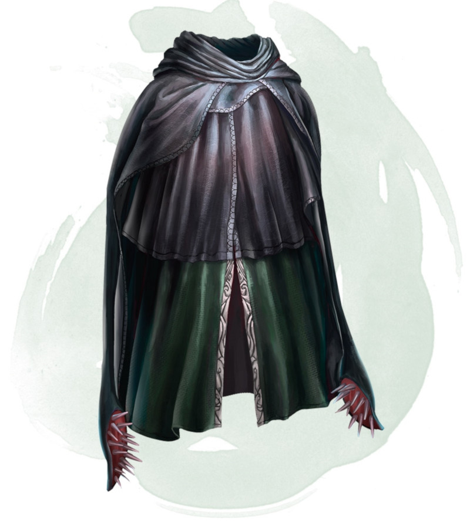

Fantasy Comprendium
Artefactos
“We are that strange species that constructs artifacts intended to counter the natural flow of forgetting.” ― William Gibson

Artefactos
Artefactos Los objetos mágicos que se encuentran en los alijos de los monstruos vencidos o en criptas olvidadas hace mucho, o incluso de algun vendedor en particular. Tales objetos conceden capacidades que raramente un personaje conseguiría de otro modo o complementan sus capacidades de una manera asombrosa.

Capa de desplazamiento

Agregar